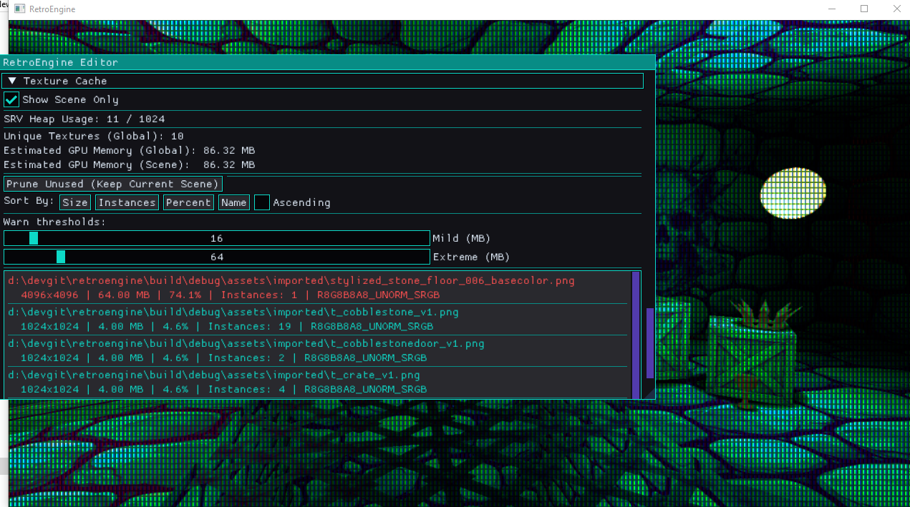
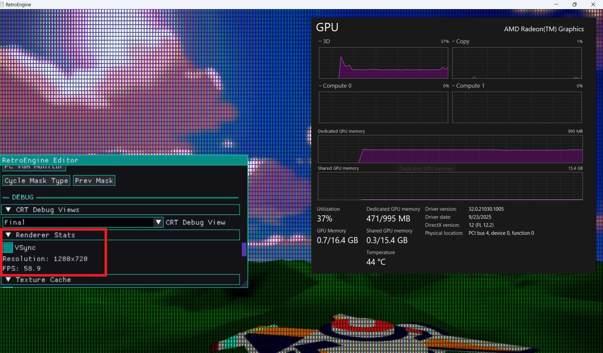

Terrain Grew Up
So in the last log, we ended with terrain stable and streaming.
Chunks regenerate deterministically, which keeps things consistent. I set up normals in world-space after generating the terrain meshes, and bounding boxes are now generated correctly. The part I'm most excited about though is that the editor and runtime behave the same. That level of parity is something I always want so editor experiences and gameplay match 1:1.
At this point terrain only supported a base color.
The obvious next step was letting terrain use a real albedo texture, just like any other mesh in the engine.
The material pipeline already existed. Terrain entities flow through the same SceneRenderer path. So this should have been trivial.
It was not trivial.
What Actually Happened
I expanded the terrain data and editor side to support assigning textures, and decided a good first test was to assign a 4096×4096 texture to terrain. Just to really see what it could handle at this point, how long it took to apply, etc. Set the albedo texture in the editor and then...
The engine froze. For awhile. After a few moments I finally get the log pulled up:
E_OUTOFMEMORY DXGI_ERROR_DEVICE_RESET
The log told the real story as I dug into it.
[TextureCache] Loaded+cached: ... 4096x4096 ... [TextureCache] Loaded+cached: ... 4096x4096 ... [TextureCache] Loaded+cached: ... 4096x4096 ... (repeated thousands of times)
Every terrain chunk was loading its own copy of the texture!
Let’s do the math:
4096 × 4096 × 4 bytes ≈ 64 MB 64 MB × ~3000 chunks ≈ 192 GB
The GPU didn’t misbehave. It refused. At this time I'm testing with a 64gb which is queit decent, so this exposed a giant crack in my engine.
The Mistake
This was the old pattern:
if (!entity.albedoLoaded)
{
LoadTexture2D(...);
entity.albedoLoaded = true;
}
That works when you have ten entities. Even a hundred was fine.
Terrain streaming meant hundreds or even thousands though.
I was treating textures as if they were owned per entity.
They were, but they shouldn't be.
Textures should be shared resources.
The Texture Cache
The fix wasn’t reducing texture size. It wasn’t limiting chunk count.
It was changing ownership.
The Retro Game Engine now maintains a global texture cache:
std::unordered_map<std::wstring, Entry> m_entries;
Lookup looks like this:
const std::wstring key = NormalizeKey(assetPath);
auto it = m_entries.find(key);
if (it != m_entries.end())
{
outEntry = it->second;
return true;
}
Only if the key does not exist do we actually load:
LoadTexture2D_Helper(m_device, cmdList, key.c_str(), e.resource); m_entries.emplace(key, e);
One texture. One SRV. Shared by every chunk.
Normalization (Quiet but Critical)
Keying by path only works if paths are deterministic.
This became the canonical normalization:
std::wstring TextureCache::NormalizeKey(const std::wstring& path) const
{
std::wstring full = ResolveAssetPathW(path);
for (auto& ch : full)
if (ch == L'/') ch = L'\\';
for (auto& ch : full)
if (ch >= L'A' && ch <= L'Z')
ch = wchar_t(ch - L'A' + L'a');
return full;
}
Everything defers to this.
Renderer pruning. Editor usage stats. Cache lookup.
There is exactly one truth for a texture key.
Clearing Is Not Safe
I originally added a “Clear Texture Cache” button.
Pressing it mid-frame caused immediate crashes.
That was correct behavior I soon learned. The GPU was still using those descriptors which causes a lot issues when they are modified at that stage.
The correct solution became pruning:
void Renderer::PruneTexturesForScene(const SceneGraph& graph)
{
WaitForPreviousFrame();
std::unordered_set<std::wstring> used;
for (const SceneEntity& e : graph.entities)
{
if (!e.albedoPath.empty())
used.insert(m_textureCache->NormalizeForLookup(e.albedoPath));
}
m_textureCache->PruneUnused(used);
}
No destruction while in-flight. No undefined behavior.
Huge improvement. It’s almost boring how dramatic the difference is. Went from D3D12 errors to 1k FPS.
Debugging What You Can’t See
Fixing the architecture wasn’t enough. I wanted visibility.

The editor now reports:
- Global texture memory (estimated from width × height × format)
- Scene-only memory usage
- SRV heap allocation count
- DXGI format
- Instance count per texture
Entries are color-coded:
- Teal — normal
- Orange — mild threshold
- Red — extreme threshold
Texture cache debug panel. Scene filter enabled.
Seeing memory pressure directly in the editor changes how you build in real-time. It lets me (and any other user) immediately see the impact of an assigned texture.
Why This Was Important to Me
GPU prices have not returned to where they were five or six years ago.
During the 2020–2022 supply chain crunch, mid-range GPUs doubled or tripled in price. Even after stabilization, modern cards remain significantly more expensive than their predecessors at equivalent tiers as AI demands more and more.
Testing on a bottom-tier RDNA2 iGPU and holding 60 FPS confirms that the architecture decisions are working.
It has to respect memory and behave predictably. My goal is simple: low-end hardware should be able to develop and run games in this engine without fighting it.
Accidentally attempting 192GB of allocations isn’t just a bug, it’s the opposite of the engine’s goal.
Now
Terrain now supports high-resolution textures safely.
Chunks stream. Textures load once. Memory stays flat.
The engine didn’t get flashier. It got stricter.
Low-End Reality Check
After stabilizing the texture cache, I moved testing to a deliberately weak machine.
AMD Ryzen 5 7535U
Radeon 660M (6 RDNA2 CUs, integrated graphics)
Shared system memory
60Hz locked panel
This GPU sits roughly in the bottom 10–15% of Steam hardware as of early 2026. It’s not a gaming laptop. It’s a thin and light with an iGPU.
With textured terrain, streaming active, and no further optimization passes like instancing or aggressive culling — the engine holds a steady 60 FPS!

That's the bar.
If the worst-case hardware runs stable at 60, then 85–90% of Steam users with discrete GPUs are going to run significantly above that.
The texture cache wasn’t just about fixing a crash. It was about flattening memory behavior so performance doesn’t spike unpredictably.
Render Style: Quantization & Dither
While stabilizing memory, I also added something intentionally destructive.
Scene-level color quantization and ordered dither.
These are not post-process filters. They are part of the lighting pipeline.
A new constant buffer was introduced:
struct SceneStyleCB
{
int quantLevels;
int quantEnabled;
int ditherEnabled;
float ditherStrength;
};
Bound at register b3 in both mesh and sprite pipelines.
In the pixel shader, degradation happens after lighting and emissive:
if (quantEnabled != 0 && quantLevels > 1)
{
float levels = (float)quantLevels;
color.rgb = floor(color.rgb * levels) / levels;
}
Before quantization, we bias using a 4×4 Bayer matrix:
static const float4x4 bayer4 = {
0.0/16.0, 8.0/16.0, 2.0/16.0, 10.0/16.0,
12.0/16.0, 4.0/16.0, 14.0/16.0, 6.0/16.0,
3.0/16.0, 11.0/16.0, 1.0/16.0, 9.0/16.0,
15.0/16.0, 7.0/16.0, 13.0/16.0, 5.0/16.0
};
Final per-pixel order:
Lighting → Emissive → Dither Bias → Quantization → CRT Pipeline
The CRT simulation remains untouched. It operates on the degraded signal.
These controls are scene-level, not per-material. The entire world shares the same degradation profile.
That keeps the behavior deterministic. And performance predictable.
Current Status
The chunk manager now owns the lifecycle for terrain meshes.
The texture cache owns GPU texture lifetime.
Entities reference them.
That separation is not optional.
This was one of the more important upgrades the Retro Game Engine has had so far.